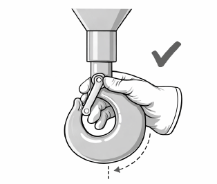
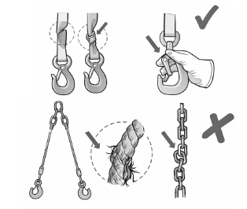
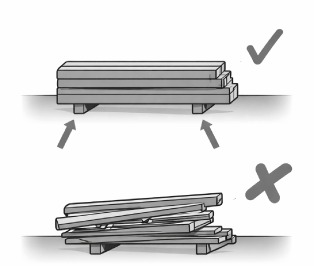
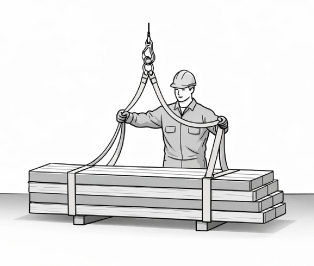
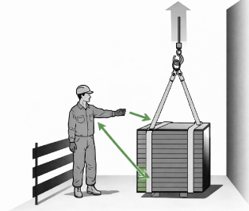
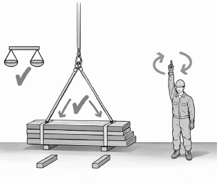
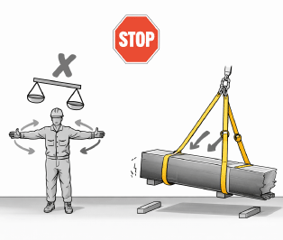

IMBRAGO DEI CARICHI
Controlli preventivi

Controllo della chiusura del gancio della gru. Il dispositivo di sicurezza deve chiudere l'apertura d'imbocco del gancio.

L'imbracatura non deve risultare danneggiata.

I materiali da trasportare con la gru devono essere in uno stato idoneo.

Il materiale deve essere trasportato in posizione ben equilibrata.
Applicazione di catene, cinghie o funi idoneo da rendere impossibile qualsiasi spostamento del carico durante il sollevamento e trasporto.

Restare in posizione di lavoro sicura ed evitare richi di caduta e schiacciamento.

Quando il carico si trova poco sopra il suolo, controllare se il carico è in equilibrio e se i punti di imbracatura sono stabili.

Se il carico si rovescia o sposta, dare subito con le mani segnale di STOP.